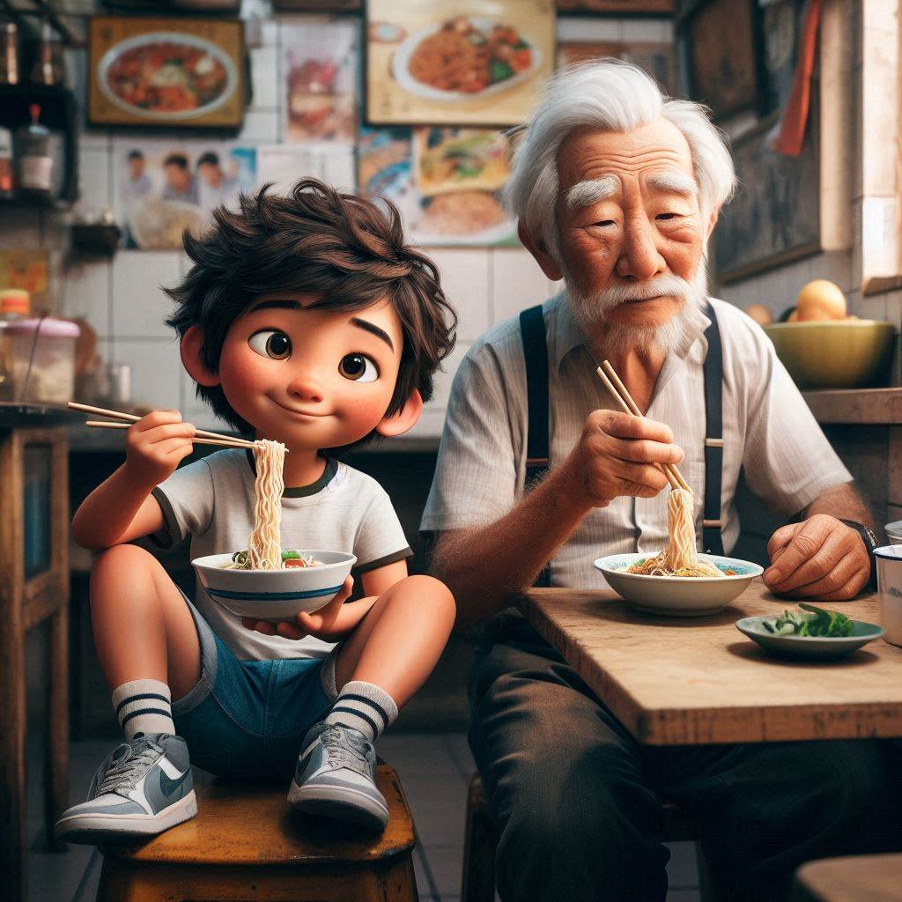

The haiya’s humble beginning
The haiya’s Journey
In the bustling streets of Malaysia Chinatown, Mr. Wong was known for his famous noodle shop. Every
day, people from all over the city would line up to taste his delicious noodles. Mr. Wong
was a perfectionist, always ensuring that each bowl was cooked to perfection.
One busy afternoon, a young boy named Timmy walked into the shop. He had heard legends about
Mr. Wong’s noodles and was eager to try them. As he approached the counter, he saw Mr. Wong
in deep concentration, stirring a large pot of broth.

“Excuse me, Mr. Wong,” Timmy said politely. “Can I have a bowl of your famous noodles?”
Mr. Wong looked up, his face breaking into a warm smile. “Of course, young man! One bowl of
noodles coming right up!”
As Mr. Wong prepared the noodles, Timmy watched in awe. The way Mr. Wong moved, with
precision and grace, was like watching an artist at work. Finally, the bowl was ready, and
Mr. Wong handed it to Timmy.
Timmy took a bite and his eyes widened in delight. “This is amazing!” he exclaimed. “Thank
you so much, Mr. Wong!”
Mr. Wong chuckled. “I’m glad you like it. Enjoy your meal!”
Just then, a loud crash came from the kitchen. Mr. Wong’s assistant, Mei, had accidentally
knocked over a stack of bowls. “haiya!” Mr. Wong exclaimed, rushing to help her.
Timmy couldn’t help but giggle. “What does ‘haiya’ mean, Mr. Wong?”
Mr. Wong smiled as he helped Mei pick up the bowls. “It’s an expression we use when
something unexpected happens. It can mean surprise, frustration, or even amusement. In this
case, it’s a little bit of all three!”
Timmy nodded, understanding. “haiya,” he repeated, trying it out for himself.
Mr. Wong laughed. “That’s right! Now, finish your noodles before they get cold.”
As Timmy enjoyed the rest of his meal, he couldn’t help but feel a sense of warmth and
belonging. In that moment, he knew he would always remember the day he learned the meaning
of “haiya” in Mr. Wong’s noodle shop.